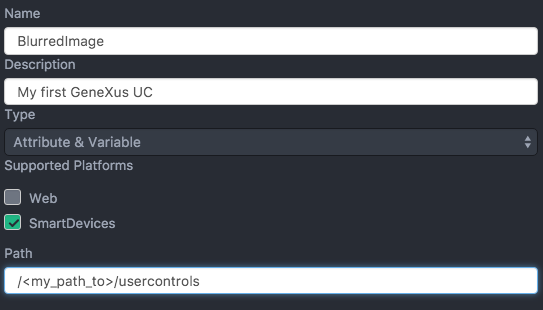

IntroductionThis document shows with an example, how to create a (very simple) User Control for iOS. This is not a complete guide on how to create a User Control. It is intended only as an example, to make it easier to get started. Creating the control definitionTo create the User Control definition, it is highly recommended to use the User Control Generator. After you install the tool, you can go to Atom and create the project through Packages > GeneXus > Create User Control.  There is not much to do after that because the control is pretty simple.
<iOS_SupportFiles>
<File>iphoneos\BlurredImage.framework.gxzip</File>
<File>iphonesimulator\BlurredImage.framework.gxzip</File>
</iOS_SupportFiles>
<iOS_ReferencedFiles>
<File embed="true">./UserControls/$(PLATFORM_NAME)/BlurredImage.framework</File>
</iOS_ReferencedFiles>
<iOS_ClassName>GXUCBlurredImage</iOS_ClassName>
Then, in the properties file (BlurredImageProperties.xml), you need to tell the control that it is available for Image attributes, by setting the FlagDataTypeFilter to image. User control implementationTo implement the User Control, you'll have to use the Framework template. When you reach the section Implement your User Control or External Object, you'll have to provide the actual implementation. To do that: 1. Create a new Swift file named GXUCBlurredImage. 2. Copy and paste the following code:
import Foundation
import GXCoreUI
@objc(GXUCBlurredImage)
public class GXUCBlurredImage: GXControlImage {
public override func newEditorViewWithFrame(frame: CGRect) -> UIView {
let editorView = super.newEditorViewWithFrame(frame)
// the call to super.newEditorViewWithFrame(frame) creates the imageView
if let imageView = self.imageView {
let blurEffect = UIBlurEffect(style: .Dark)
let blurEffectView = UIVisualEffectView(effect: blurEffect)
blurEffectView.frame = editorView.bounds
blurEffectView.autoresizingMask = [.FlexibleWidth, .FlexibleHeight]
blurEffectView.userInteractionEnabled = false
imageView.addSubview(blurEffectView)
imageView.sendSubviewToBack(blurEffectView)
}
return editorView
}
}
The code is pretty simple. A few things to note:
3. Continue with the Framework template for iOS User Controls or External Objects document to build the framework. DeploymentIf you followed the steps in the Framework template for iOS User Controls or External Objects document, then you are all set. Make sure you copied the .framewors to your User Control folder, build in debug or release mode in Atom, and test the User Control in GeneXus as you would normally do with any other User Control.
|
| Backlinks |
| Creating User Controls for iOS |